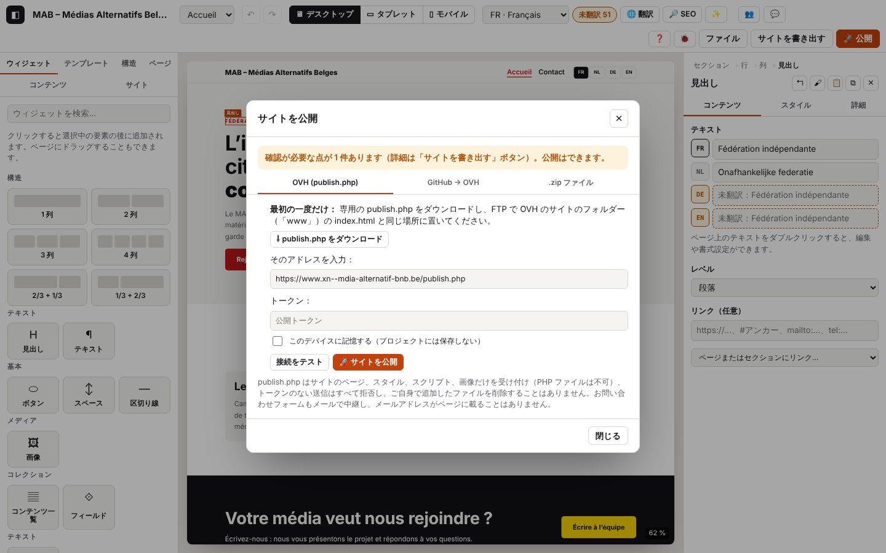

8. チェック、書き出し、公開

このページの内容
以下のログ抜粋はフランス語で記録したものです。コードとレベルはどの言語でも同じです（実際のログのメッセージは表示言語で出ます）。
サイトを公開する前に、Atelier はサイトをチェックし（書き出しを妨げるエラー、確認が必要な点）、次にサイトを生成して（静的な HTML ページ、スタイル、画像、サイトマップ、フィード、イベント）、送り出します。送り先は 3 通りです：自分でアップロードする .zip、OVH と publish.php（PHP ファイルを 1 つ、一度だけ置きます）、またはホスティングがデプロイする GitHub リポジトリ。
ログのドメイン：audit.*（チェック）、export.*（.zip ファイル）、publish.*（公開ウィンドウ：publish.php、接続テスト、GitHub）、storage.secret-*（デバイスに保存したトークン）、net.*（リクエスト）、php.*（publish.php がサーバー側で行ったこと）。
8.1 書き出す前にサイトをチェックする
目的：サイトを公開できるかどうか、何を直すべきかを知ること。
手順：右上の サイトを書き出す ボタン、または「未翻訳 N」バッジを押します。
画面の表示：「書き出し前のチェック」ウィンドウが開きます：エラー（書き出しを妨げるもの）、確認が必要な点（「移動」付き）、お知らせ、翻訳するテキスト。
想定されるログ（journaux/export-zip.log）
技術的な詳細：想定されるログ
04:38:05.935 +6.36s INFO audit.open Vérification avant export : prêt (1 point(s) à vérifier) {"mode":"export","ok":true,"errors":0,"warnings":1,"info":3,"missing":51,"ms":3,"firstErrors":[],"firstWarnings":["Accueil : image non choisie : rien ne s’affichera à cet endroit."]}
04:38:05.937 +6.37s DEBUG ui.dialog.open Fenêtre ouverte : Vérification avant export {"id":"auditDialog","class":"audit","modal":true}missing は未翻訳のテキストの数、firstWarnings は確認が必要な点の最初の 5 件をそのまま示したものです。
バリエーション
| 状況 | 変わること | ログ |
|---|---|---|
| エラーが書き出しを妨げている | 「N 件のエラーにより書き出しできません。」、書き出しボタンは押せない | audit.open が WARN になり、firstErrors 付き |
| 「未翻訳 N」バッジ | 「翻訳するテキスト」ウィンドウが開く | audit.open {"mode":"translations",…} |
| 指摘された点で「移動」を押す | ウィンドウが閉じ、該当する要素（ページ、言語、コンポーネント、コレクション）が選択される | audit.go（INFO）とその移動先、続いて store.view、store.select |
8.2 サイトを .zip で書き出す
目的：サイトのすべてのファイルを手に入れ、どのホスティングにでもアップロードできるようにすること。
手順：サイトを書き出す → 「サイトを書き出す」（確認が必要な点が残っている場合は「このまま書き出す」）。
画面の表示：サイト名.zip ファイルがダウンロードされ、「サイトを書き出しました：N ファイル。」と表示されます。
想定されるログ（journaux/export-zip.log）
技術的な詳細：想定されるログ
04:38:05.986 +6.42s INFO audit.export Export malgré des points à vérifier {"warnings":1}
04:38:05.988 +6.42s INFO export.zip.start [export.zip#1] Export du site en .zip
04:38:05.992 +6.42s DEBUG export.zip.render [export.zip#1 · 4 ms] Pages générées {"files":12,"ms":3}
04:38:05.999 +6.43s INFO export.zip.ok [export.zip#1 · 11 ms] Site exporté : 12 fichiers {"files":12,"kb":69,"untranslated":51}
04:38:05.999 +6.43s INFO ui.toast Message affiché : Site exporté : 12 fichiers. 51 textes non traduits s’affichent dans la langue principale.エラー
| 状況 | 表示されるメッセージ | ログ | 対処 |
|---|---|---|---|
| サイトが有効ではない | 「書き出しできません：…」 | export.zip.fail（ERROR）とエラーの一覧 | 最初に挙げられたエラーを直してください |
| 生成中のエラー（バグ） | 「書き出しできません：…」 | export.zip.fail（ERROR）とコールスタック | ログを私たちに送ってください |
8.3 OVH に公開する：publish.php をインストールする（一度だけ）
目的：Atelier からホスティングに直接公開できるようにすること。
手順
- 🚀 公開 → 「OVH (publish.php)」タブ → ⇩ publish.php をダウンロード。このファイルに入っているのは、新しいトークンのフィンガープリントだけです。トークンそのものは「トークン」欄に残ります（残しておくには「このデバイスに記憶する（プロジェクトには保存しない）」にチェックを入れます。トークンがプロジェクトに入ることはありません）。
- FTP で
publish.phpをサイトのフォルダー（「www」）のindex.htmlと同じ場所に置きます。以前のものがあれば置き換わります：古いトークンは使えなくなります。 - そのアドレスを入力します：
https://www.your-site.be/publish.php。
想定されるログ（journaux/publier-telecharger-php.log）
技術的な詳細：想定されるログ
04:38:06.183 +6.61s INFO publish.open Fenêtre Publier {"mode":"zip","tab":"php","ok":true,"errors":0,"warnings":1}
04:38:06.197 +6.63s DEBUG storage.secret-read Aucun secret gardé {"name":"php-token"}
04:38:06.198 +6.63s DEBUG storage.secret-read Aucun secret gardé {"name":"github-token"}
04:38:06.287 +6.72s INFO storage.secret-write Secret oublié sur cet appareil {"name":"php-token"}
04:38:06.297 +6.73s INFO publish.php.generate publish.php v4 téléchargé avec un nouveau jeton (l’ancien publish.php ne l’acceptera pas) {"version":"4","remember":false}publish.open：ウィンドウを開いた時点でのチェックの状態（公開がブロックされている場合はfirstError）。storage.secret-read/storage.secret-write：このデバイスに保存した、または忘れたトークン（チェックを入れた場合は「シークレットをこのデバイスに保存しました…」）。トークンそのものがログに出ることはありません。
エラー
| 状況 | 表示されるメッセージ | ログ | 対処 |
|---|---|---|---|
アドレスが publish.php で終わっていない、または https でない | 「想定されるアドレス：https://www.your-site.be/publish.php」 | publish.settings-invalid（WARN） | アドレスを直してください（http はローカルでの試験に限り使えます） |
| デバイスに保存したトークンを読み取れない | storage.secret-fail（WARN） | トークンを入力し直してください |
8.4 接続をテストする
目的：publish.php が応答するか、最新版か、トークンが一致するかを確かめ、ホスティングの制限を知ること。
手順：「接続をテスト」を押します。
画面の表示：「接続に成功しました：publish.php バージョン 4、PHP 8.x。最大アップロード 2M（フォーム 8M）、mail() あり、フォルダー 書き込み可。」
想定されるログ（journaux/publier-tester-connexion.log）
技術的な詳細：想定されるログ
04:38:06.392 +6.82s INFO publish.test.start [publish.test#1] Test de connexion à publish.php {"url":"http://127.0.0.1:9501/publish.php","token":true}
04:38:06.393 +6.82s DEBUG net.request GET 127.0.0.1:9501/publish.php {"id":1,"method":"GET","url":"http://127.0.0.1:9501/publish.php?atelier_debug=1"}
04:38:06.416 +6.84s DEBUG net.response 200 GET 127.0.0.1:9501/publish.php (23 ms) {"id":1,"status":200,"ms":23,"type":"application/json","req":"3f2f4264"}
04:38:06.422 +6.85s DEBUG php.req.start GET reçu {"method":"GET","who":"e184e45609","bytes":0,"ua":"Mozilla/5.0 …","origin":"http://localhost:8791","req":"3f2f4264","srvMs":0}
04:38:06.423 +6.85s WARN php.diag Diagnostic de l’hébergement demandé : limite d’envoi basse (2 Mo) {"upload_max":"2M","post_max":"8M","data_writable":true,"zip":true,"mail":true,"req":"3f2f4264","srvMs":0.6}
04:38:06.423 +6.85s DEBUG php.status Statut demandé (test de connexion) {"version":"4","zip":true,"diag":true,"req":"3f2f4264","srvMs":1}
04:38:06.423 +6.85s DEBUG php.req.end Réponse 200 (status) {"status":200,"route":"status","mem_kb":741,"req":"3f2f4264","srvMs":1}
04:38:06.418 +6.85s INFO publish.test.diag [publish.test#1 · 26 ms] Diagnostic de l’hébergement {"upload_max_filesize":"2M","post_max_size":"8M","memory_limit":"-1","max_execution_time":30,"mail":true,"data_writable":true,"root_writable":true,"log_level":"info",…}
04:38:06.418 +6.85s INFO publish.test.ok [publish.test#1 · 26 ms] publish.php répond {"version":"4","php":"8.3.6","zip":true,"req":"3f2f4264"}php.*の行はサーバーから届いたものです（リクエスト3f2f4264のトレース）。php.diagが WARN：upload_max_filesizeが 8 MB 未満です。サイト全体は 1 つの .zip で送られるので、この制限を超えると公開に失敗します（php.publish.nofile）。OVH では、この制限はお客様ページ（PHP の設定）か.user.iniで変更できます。publish.test.diag：診断の全体（最大アップロード、メモリー、最大実行時間、mail()、書き込み権限、空き容量、拡張機能）。
バリエーション
| 状況 | 変わること | ログ |
|---|---|---|
| 欄にトークンがない | 診断なし | publish.test.start {"token":false}、php.status {"diag":false}、publish.test.ok |
| 古い publish.php（バージョン 3 以前） | 「新しいバージョン（4）があります。サーバーのログを使うには publish.php をダウンロードし直してください。」 | publish.test.old-version（WARN）{"installed":"3","expected":"4"} |
エラー（journaux/publier-tester-erreurs.log、journaux/publier-ovh-jeton-absent-faux.log）
| 状況 | 表示されるメッセージ | ログ | 対処 |
|---|---|---|---|
| サーバーに接続できない、アドレスが間違っている、ファイルがない | 「このアドレスの publish.php から応答がありません（Failed to fetch）…」 | net.fail（ERROR）、publish.test.fail（ERROR）と hint | そのアドレスをタブで開いてください。{"atelier":true,…} と表示されるはずです。表示されなければ、ファイルの置き場所が違います |
PHP が応答の中に警告を出している（OVH の「dev」モード、display_errors） | 「… publish.php からではない応答 200」 | publish.test.not-json（WARN）と応答の冒頭（start）、続いて publish.test.fail | start を読んでください。それが PHP のメッセージです。ホスティングを本番（production）モードに戻してください（.ovhconfig） |
| 入力したトークンがこの publish.php と一致しない | 「注意：入力したトークンはこの publish.php と一致しません。」 | publish.test.token-refused（WARN）。サーバー側では php.diag.denied（WARN） | publish.php をダウンロードし直して置き直すか、正しいトークンを入力し直してください |
| ホスティングに zip 拡張がない | 「… zip 拡張がありません！」 | publish.test.no-zip（WARN） | zip 拡張を有効にする（ホスティングの PHP の設定）か、GitHub から公開してください |
技術的な詳細：想定されるログ
04:38:08.110 +8.54s INFO publish.test.start [publish.test#3] Test de connexion à publish.php {"url":"http://127.0.0.1:9502/publish.php","token":true}
04:38:08.116 +8.54s ERROR net.fail GET 127.0.0.1:9502/publish.php : Failed to fetch (réseau, CORS ou adresse injoignable) {"id":7,…,"online":true,"error":{"name":"TypeError","message":"Failed to fetch"}}
04:38:08.117 +8.55s ERROR publish.test.fail [publish.test#3 · 7 ms] Failed to fetch {"url":"http://127.0.0.1:9502/publish.php","hint":"Le navigateur n’a reçu aucune réponse utilisable : serveur injoignable, adresse fausse, ou réponse sans autorisation CORS (fichier absent → page d’erreur de l’hébergement, ou PHP non exécuté).",…}
04:38:08.288 +8.72s DEBUG net.response 200 GET 127.0.0.1:9501/avertissement/publish.php (7 ms) {"id":9,"status":200,"ms":7,"type":"text/html"}
04:38:08.290 +8.72s WARN publish.test.not-json [publish.test#5 · 10 ms] La réponse n’est pas du JSON : PHP n’est peut-être pas exécuté, ou une page d’erreur de l’hébergement répond {"status":200,"start":"<br />\n<b>Warning</b>: session_start()…"}
04:38:08.366 +8.79s WARN publish.test.old-version [publish.test#6 · 9 ms] publish.php installé en version 3 : la version 4 ajoute le journal du serveur et le diagnostic {"installed":"3","expected":"4"}
04:38:08.366 +8.79s INFO publish.test.ok [publish.test#6 · 9 ms] publish.php répond {"version":"3","php":"8.3.6","zip":true}8.5 OVH に公開する
目的：ワンクリックでサイトを公開すること。
手順：「🚀 サイトを公開」を押します。
画面の表示：「サイトを公開しました：N ファイルを送信…」と、メッセージ「サイトを公開しました（N ファイル）。」が表示されます。
想定されるログ（journaux/publier-ovh.log）
技術的な詳細：想定されるログ
04:38:06.488 +6.92s INFO publish.php.start [publish.php#1] Publication sur OVH (publish.php) {"url":"http://127.0.0.1:9501/publish.php"}
04:38:06.496 +6.92s INFO publish.php.warnings [publish.php#1 · 8 ms] 1 point(s) à vérifier (la publication continue) {"warnings":[…]}
04:38:06.506 +6.93s DEBUG net.response 200 GET 127.0.0.1:9501/publish.php (10 ms) {"id":2,"status":200,"ms":10,"type":"application/json","req":"e5f9f793"}
04:38:06.514 +6.94s DEBUG publish.php.version [publish.php#1 · 26 ms] publish.php installé : version 4 {"version":"4"}
04:38:06.518 +6.95s INFO publish.php.package [publish.php#1 · 30 ms] Paquet prêt : 12 fichiers {"files":12,"kb":69,"forms":0,"ms":4}
04:38:06.520 +6.95s DEBUG net.request POST 127.0.0.1:9501/publish.php {"id":3,"method":"POST","url":"http://127.0.0.1:9501/publish.php?atelier_debug=1","body":{"site":"Blob application/zip (69 Ko)","forms":"2 car."}}
04:38:06.537 +6.97s INFO net.response 200 POST 127.0.0.1:9501/publish.php (18 ms) {"id":3,"status":200,"ms":18,"type":"application/json","req":"55a4ec48"}
04:38:06.539 +6.97s DEBUG php.req.start POST reçu {"method":"POST","who":"e184e45609","bytes":71370,…,"req":"55a4ec48","srvMs":0}
04:38:06.539 +6.97s INFO php.publish.start Paquet reçu {"kb":69,"req":"55a4ec48","srvMs":0}
04:38:06.539 +6.97s DEBUG php.publish.checked Paquet vérifié {"files":12,"req":"55a4ec48","srvMs":0.4}
04:38:06.539 +6.97s DEBUG php.publish.staged Fichiers préparés à part {"files":12,"req":"55a4ec48","srvMs":2}
04:38:06.539 +6.97s INFO php.publish.ok Site publié {"written":12,"moved":12,"removed":0,"forms":0,"req":"55a4ec48","srvMs":3.8}
04:38:06.539 +6.97s INFO php.req.end Réponse 200 (publish) {"status":200,"route":"publish","mem_kb":746,"req":"55a4ec48","srvMs":3.8}
04:38:06.538 +6.97s INFO publish.php.ok [publish.php#1 · 50 ms] Site publié : 12 fichiers {"written":12,"removed":0,"ref":"55a4ec48"}確認ポイント：publish.php.version（インストールされているバージョンによって、イベントの .ics ファイルを送るかどうかが決まります）、publish.php.package（パッケージのサイズ。8.4 のアップロード制限と比べてください）。続いてサーバー側で php.publish.start → checked（名前と種類を確認済み）→ staged（すべて別の場所に書き込み済み）→ ok（配置完了。removed はサイトから取り除いた古いファイルの数で、あなたが自分で追加したファイルは決して消しません）。forms は登録したお問い合わせフォームの数です。
バリエーション
| 状況 | 変わること | ログ |
|---|---|---|
| 確認が必要な点がある | 公開はそのまま続く | publish.php.warnings（INFO） |
| publish.php のバージョンが 1 | .ics は送られず、メッセージでそのことが知らされる | publish.php.version {"version":"1"}、publish.php.package {"skipped":N} |
| publish.php のバージョンが不明（状態を読み取れない） | 慎重に、.ics なしで送る | publish.php.version-unknown（WARN） |
| メールアドレスが無効なフォームがある | そのフォームは何も転送しない | サーバー側で php.publish.forms-skipped（WARN） |
エラー（journaux/publier-ovh-mauvais-jeton.log）
| 状況 | 表示されるメッセージ | ログ | 対処 |
|---|---|---|---|
| トークンがない | 「公開トークンを入力してください（または新しい publish.php を作成してください）。」 | publish.php.fail（ERROR）「jeton absent」（トークンなし） | トークンを入力してください |
| トークンが間違っている | 「公開に失敗しました：Jeton de publication refusé.（サーバーのログの参照番号 xxxxxxxx）」— 1 秒後に表示 | net.response 401（WARN）、publish.php.fail（ERROR）と ref。サーバー：php.publish.denied（WARN） | 置いた publish.php のトークンを入力し直すか、publish.php をダウンロードし直してください |
| チェックが公開をブロックしている | 「公開できません：…」 | publish.php.fail（ERROR）「Publication bloquée par la vérification」（チェックにより公開をブロック）と errors | 先に直してください（8.1） |
| パッケージを拒否（許可されていないファイル）：Atelier では起こらないはずです | 「公開に失敗しました：Paquet refusé : rien n’a été publié. — 名前 : 理由」（パッケージを拒否：何も公開されていません） | publish.php.rejected（WARN）と一覧。サーバー：php.publish.rejected（WARN） | ログを私たちに送ってください |
| ホスティングに対してサイトが大きすぎる | 「… Fichier du site manquant (upload_max_filesize dépassé ; …)」（サイトのファイルがありません：upload_max_filesize を超過）または「エラー 413（ホスティングに対してサイトが大きすぎます）」 | サーバー：php.publish.nofile（WARN）と content_length、upload_max、post_max。または php.publish.too-big | 画像を軽くするか、ホスティングで upload_max_filesize と post_max_size を増やしてください |
| 途中でアーカイブが壊れた | 「Archive illisible.」（アーカイブを読み取れません） | サーバー：php.publish.bad-zip（WARN） | もう一度公開してください |
| zip 拡張がない | 「Extension PHP zip absente sur cet hébergement.」（このホスティングには PHP の zip 拡張がありません） | サーバー：php.publish.nozip（ERROR） | 8.4 を参照してください |
| ディスクがいっぱい、書き込み権限がない | 「Écriture impossible sur l’hébergement : …」（ホスティングに書き込めません：…）／「Le dossier atelier-data ne peut pas être créé…」（atelier-data フォルダーを作成できません…） | サーバー：php.publish.write-fail、php.publish.read-fail、php.publish.move-fail、php.data-fail、php.write-fail（ERROR） | 空き容量と権限を確認してください（FTP）。サーバーのログを送ってください |
| PHP のバグや障害 | 「Erreur interne de publish.php (référence xxxxxxxx dans le journal du serveur).」（publish.php の内部エラー。参照番号はサーバーのログに） | サーバー：php.exception または php.fatal（ERROR）、警告は php.warning（WARN） | サーバーのログ（第 0 章）を読み、私たちに送ってください |
技術的な詳細：想定されるログ
04:38:06.618 +7.05s INFO publish.php.start [publish.php#2] Publication sur OVH (publish.php) {"url":"http://127.0.0.1:9501/publish.php"}
…
04:38:07.654 +8.08s WARN net.response 401 POST 127.0.0.1:9501/publish.php (1012 ms) {"id":5,"status":401,"ms":1012,"type":"application/json","req":"38ae9a08"}
04:38:07.656 +8.09s DEBUG php.req.start POST reçu {…,"req":"38ae9a08","srvMs":0}
04:38:07.656 +8.09s WARN php.publish.denied Publication refusée : jeton faux {"req":"38ae9a08","srvMs":0}
04:38:07.656 +8.09s WARN php.req.end Réponse 401 (publish) {"status":401,"route":"publish","mem_kb":746,"req":"38ae9a08","srvMs":1000.3}
04:38:07.655 +8.08s ERROR publish.php.fail [publish.php#2 · 1037 ms] Jeton de publication refusé. {"status":401,"ref":"38ae9a08","error":{…}}リクエストごとの publish.php のログ
| コード（サーバー） | レベル | 意味 |
|---|---|---|
php.req.start | DEBUG | リクエストを受信：メソッド、訪問者の識別用の値 who、サイズ、ブラウザー、送信元 |
php.req.end | DEBUG（参照）、INFO（送信）、WARN（4xx）、ERROR（5xx） | 応答を送信：ステータス、ルート（status、publish、contact、signal、logs）、メモリー |
php.status | DEBUG | 状態の問い合わせ（接続テスト） |
php.method | WARN | 許可されていない HTTP メソッド（GET、POST、OPTIONS 以外） |
php.data-corrupt | WARN | atelier-data の非公開ファイルを読み取れない：無視する |
8.6 GitHub に公開する（OVH がデプロイ）
目的：PHP を使わずに公開すること。Atelier が GitHub リポジトリにコミットを作り（変更したファイルだけ）、ホスティングが Git 連携でそれをデプロイします。
手順：🚀 公開 → 「GitHub → OVH」。所有者、リポジトリ、ブランチ、フォルダーを入力し、アクセスを限定したトークン（「Contents: Read and write」）を入れて、「🚀 GitHub に公開」を押します。
想定されるログ（journaux/publier-github.log、テストでは GitHub の API を模擬）
技術的な詳細：想定されるログ
04:38:13.972 +14.40s INFO publish.github.start [publish.github#1] Publication sur GitHub {"owner":"aktina","repo":"site-mab","branch":"main","dir":"(racine)","token":true}
04:38:13.980 +14.41s INFO publish.github.package [publish.github#1 · 8 ms] 12 fichiers générés {"files":12}
04:38:14.001 +14.43s DEBUG net.response 200 GET api.github.com/repos/aktina/site-mab/git/ref/heads/main (19 ms) {…}
04:38:14.016 +14.45s DEBUG net.response 200 GET api.github.com/repos/aktina/site-mab/git/commits/ppppppppppppppppppppppppppppppp (14 ms) {…}
04:38:14.037 +14.47s DEBUG net.response 200 GET api.github.com/repos/aktina/site-mab/git/trees/ttttttttttttttttttttttttttttttttt (18 ms) {…}
04:38:14.049 +14.48s INFO net.response 201 POST api.github.com/repos/aktina/site-mab/git/blobs (9 ms) {…}
04:38:14.050 +14.48s DEBUG publish.github.upload [publish.github#1 · 78 ms] Fichier envoyé 1 / 12 {"done":1,"total":12}
…
04:38:14.179 +14.61s INFO net.response 201 POST api.github.com/repos/aktina/site-mab/git/trees (9 ms) {…}
04:38:14.189 +14.62s INFO net.response 201 POST api.github.com/repos/aktina/site-mab/git/commits (6 ms) {…}
04:38:14.197 +14.63s INFO net.response 200 PATCH api.github.com/repos/aktina/site-mab/git/refs/heads/main (7 ms) {…}
04:38:14.198 +14.63s INFO publish.github.ok [publish.github#1 · 226 ms] Publié sur GitHub : commit c0ffee1 {"commit":"c0ffee1000000000000000000000000000000000","uploaded":12,"removed":0,"unchanged":0}確認ポイント：ブランチ（ref）、最新のコミット、現在のツリー、続いて変更したファイルだけのアップロード（blobs）、新しいツリー、コミット、ブランチの更新。unchanged は同じ内容のため送り直さなかったファイルの数です。
エラー（journaux/publier-github-refuse.log）
| 状況 | 表示されるメッセージ | ログ | 対処 |
|---|---|---|---|
| トークンを拒否（401/403） | 「GitHub がトークンを拒否しました。このリポジトリのコンテンツへの書き込み権限があるか確認してください。」 | net.response 401（WARN）、publish.github.fail（ERROR） | このリポジトリだけに限定した「fine-grained」トークンを、「Contents: Read and write」で作成してください |
| リポジトリまたはブランチが見つからない（404） | 「GitHub で見つかりません（リポジトリまたはブランチ「main」）：…」 | net.response 404（WARN）、publish.github.fail | 所有者、リポジトリ、ブランチを確認してください |
| リポジトリが空（409） | 「リポジトリが空です。先にファイル（README など）を作成してから公開してください。」 | publish.github.fail | リポジトリに README を作成してください |
| 名前が無効 | 「リポジトリ名が無効です…」／「ブランチ名が無効です。」 | publish.github.fail | 欄を直してください |
| ネットワークが切れている | 「Failed to fetch」 | net.fail（ERROR）、publish.github.fail | オンラインに戻ってからもう一度試してください |
技術的な詳細：想定されるログ
04:38:14.285 +14.71s INFO publish.github.start [publish.github#2] Publication sur GitHub {"owner":"aktina","repo":"site-mab","branch":"main","dir":"(racine)","token":true}
04:38:14.296 +14.72s INFO publish.github.package [publish.github#2 · 11 ms] 12 fichiers générés {"files":12}
04:38:14.306 +14.73s WARN net.response 401 GET api.github.com/repos/aktina/site-mab/git/ref/heads/main (9 ms) {"id":33,"status":401,"ms":9,"type":"application/json","size":29}
04:38:14.313 +14.74s ERROR publish.github.fail [publish.github#2 · 28 ms] GitHub refuse le jeton : vérifiez qu’il donne accès en écriture au contenu de ce dépôt. {…}この章のコード
| コード | レベル | 意味 |
|---|---|---|
audit.export | INFO | チェック画面から書き出しを指示 |
audit.go | INFO | 指摘された点へ「移動」 |
audit.open | INFO / WARN | チェックを開いた（エラーが書き出しを妨げている場合は WARN） |
export.zip.start, export.zip.render, export.zip.ok, export.zip.fail | INFO / DEBUG / INFO / ERROR | .zip での書き出し |
php.data-corrupt | WARN | （サーバー）非公開ファイルを読み取れない |
php.data-fail | ERROR | （サーバー）atelier-data フォルダーを作成できない |
php.diag | INFO / WARN | （サーバー）ホスティングの診断（WARN：アップロード制限が低い） |
php.diag.denied | WARN | （サーバー）診断を拒否：トークンが間違っている |
php.exception | ERROR | （サーバー）PHP の例外、参照番号付きの応答 500 |
php.fatal | ERROR | （サーバー）PHP の致命的エラー |
php.method | WARN | （サーバー）許可されていないメソッド |
php.publish.bad-zip | WARN | （サーバー）アーカイブを読み取れない |
php.publish.checked | DEBUG | （サーバー）パッケージを確認済み |
php.publish.denied | WARN | （サーバー）公開を拒否：トークンがない、または間違っている |
php.publish.forms-skipped | WARN | （サーバー）アドレスが無効なフォームを無視 |
php.publish.move-fail | ERROR | （サーバー）ファイルを配置できない |
php.publish.nofile | WARN | （サーバー）サイトのファイルがない（アップロード制限…） |
php.publish.nozip | ERROR | （サーバー）zip 拡張がない |
php.publish.ok | INFO / ERROR | （サーバー）サイトを公開した（配置できなかったファイルがあれば ERROR） |
php.publish.read-fail | ERROR | （サーバー）アーカイブの中を読み取れない |
php.publish.rejected | WARN | （サーバー）パッケージを拒否 |
php.publish.staged | DEBUG | （サーバー）ファイルを別の場所に準備済み |
php.publish.start | INFO | （サーバー）パッケージを受信 |
php.publish.too-big | WARN | （サーバー）サイトが大きすぎる |
php.publish.write-fail | ERROR | （サーバー）書き込めない |
php.req.end | DEBUG～ERROR | （サーバー）応答を送信 |
php.req.start | DEBUG | （サーバー）リクエストを受信 |
php.status | DEBUG | （サーバー）状態の問い合わせ |
php.warning | WARN | （サーバー）PHP の警告 |
php.write-fail | ERROR | （サーバー）非公開ファイルに書き込めない |
publish.github.start, publish.github.package, publish.github.upload, publish.github.ok, publish.github.fail | INFO / INFO / DEBUG / INFO / ERROR | GitHub への公開 |
publish.open | INFO | 公開ウィンドウを開いた |
publish.php.generate | INFO | 新しいトークン付きの publish.php をダウンロードした |
publish.php.start, publish.php.warnings, publish.php.version, publish.php.version-unknown, publish.php.package, publish.php.rejected, publish.php.ok, publish.php.fail | INFO / INFO / DEBUG / WARN / INFO / WARN / INFO / ERROR | OVH への公開 |
publish.settings-invalid | WARN | 公開の設定を拒否 |
publish.test.start, publish.test.diag, publish.test.old-version, publish.test.token-refused, publish.test.no-zip, publish.test.not-json, publish.test.ok, publish.test.fail | INFO / INFO / WARN / WARN / WARN / WARN / INFO / ERROR | 接続テスト |
storage.secret-fail | WARN | デバイスに保存したトークンを読み取れない |
storage.secret-read | DEBUG | デバイスでトークンが見つかった（または見つからない） |
storage.secret-write | INFO | トークンをデバイスに保存した、または忘れた |